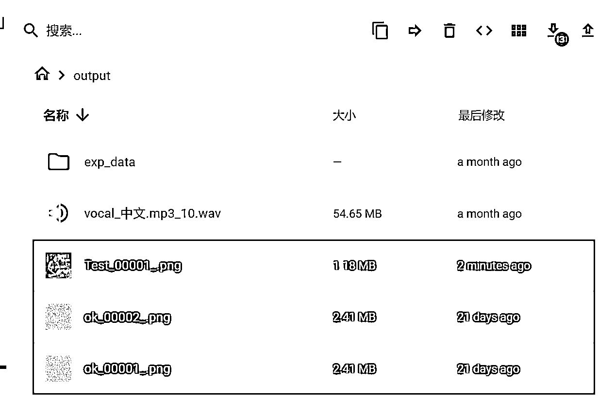
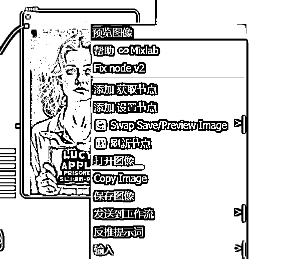
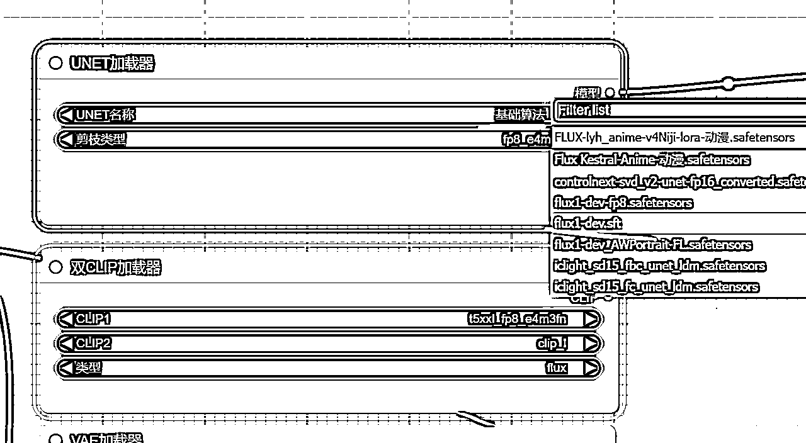

来源：https://ktnwm6ohjn.feishu.cn/docx/NXfsdsEx9oVQ5HxotDQcpbFInnd
大家好，我是土豆君，一个喜欢折腾的程序员。
今年的 Flux 模型有多爆火想必各位圈友都有感触，但是很多圈友可能苦于电脑没有高端显卡，又或者像土豆一样用过各种云平台，苦于平台卡硬盘大小卡网速，每次还要重新上传模型，很麻烦！
今天土豆分享的实操办法，不需要有本地显卡，也不需要做任何额外配置，几百个工作流，PC浏览器网页直接批量跑图！
其实关于 ComfyUI 的入门学习，土豆个人不太建议从基础的一点一滴开始学习，学习怎么用节点，怎么搭建出一个工作流，这样一步一个脚印去机械化的学习。
因为我们大部分来学习 ComfyUI 的都是成年人，成年人都有强烈的目的，也没有那么多时间像学生一样把基础知识吃透再学习，更多的是需要立马就上手用到项目中，立马跑通，需要用到什么就学什么，这样最快。等入门之后再系统性学习也不迟，学习起来还更快！
所以，这也是土豆想写这个喂饭级别教程的原因，土豆想尝试把自己从实践应用中入门学习 ComfyUI 的经验毫无保留的分享给大家，希望能有帮助！
首先我们打开哩布哩布AI的网址，这是国内做的比较好的社区平台，有很多创作者在这里分享他们的模型，资源很全。
https://www.liblib.art/
当然你会看到各种模型，不过因为Flux比较火基本上一半模型都是Flux。我们可以在这里筛选一下 Flux 模型：基础算法 F.1
然后随便找到一个模型，比如这个美女老师的Lora (Lora可以理解为在Flux上加了一个微调模型)
点击立即生图就会弹出画同款
想要什么样的风格直接画同款：
点击立即生图：
土豆跑了三次，得到的图，效果基本比较真实了吧？非常接近真人拍摄的图片。
当然只是使用模型生成图片，瑕疵是避免不了的，比如口罩、多出的肢体、图片上面的字体等。可以多跑几次，跑多张数量，这样才能跑出自己想要的图片。
这就是 Stable Diffusion 最基础的文生图的功能。目前Flux模型+各种Lora可以直接在哩布哩布AI平台直接测试。
除了文生图还有图生图、图生视频，也可以体验一下。
那么 ComfyUI 又是什么？下面我们就来体验下。
我们来到这个工作流，找到自己想要的效果图工作流，或者直接搜索。
比如我们想做一个小红书仿图的工作流就可以搜索下。
这里我们以这个工作为例子，为什么呢？它支持在线生成。
打开工作流后看到这个样子，通过鼠标滚轮可以放大缩小工作流。
点击 choose file to upload 上传图片或者 把图片直接拖入到这个图片显示的框中。然后我们点击开始生图跑一下~
这里土豆随便从小红书找了张美女照片，生成的图片感觉如何？看的出AI的痕迹么哈哈。
不过有人可能要问了，比如我想要在小红书做一个颜值男网红博主，我怎么用这个工作流生成相应的男生图片呢？因为大部分模型训练的都是女生图片比较多，出男生图片一般也要使用专用的Lora模型效果会更好些。
这其实也很简单，只需要把Lora替换就行，比如这个工作流其实已经载入了相应的 Lora，那么把相同颜色的线接过去就行了。
运行一下，哎？怎么发生错误了？原来是右边的节点没有替换，这里按住 shift 鼠标点击可以直接拔线接上去。
运行的效果，原图和对比图，基本都是同一个风格没错吧？
像这样直接一键就能运行的工作流实在是太多了，等待着你去挖掘！
好了，学会了怎么运行 LiblibAI 的工作流，马上就可以去尝试了。
现在大部分工作流基本都能正常运行，很少有报错的情况。只有比较老的工作流可能部分节点 LiblibAI 官方确实没适配，那就无法在官方平台运行，因为 LiblibAI 官方也不支持安装节点，所以只能本地跑。
比如土豆找到一个这个工作流，密密麻麻，缺少各种节点，显示一片红色区域，像这种就是缺少节点。
有的萌新可能会问，节点是啥东西？简单的讲，像这样一个个卡片样的玩意就叫做节点。
所以使用 LiblibAI 在线跑图有两个缺点：
为什么不能批量跑图呢？因为批量跑图要读取文件夹，而网页只能上传单张的图片，虽然可以用 RPA 解决，不过更好的方式可能是直接本地运行。
如果自己电脑显卡配置比较好就可以用本地的方式，但如果你像我一样，没有那么好的显卡配置电脑，那就可以借助云端的显卡平台来跑图。云端的平台我自己也用过很多家了，这里我推荐自己用的平台来操作：Cephalon Cloud 端脑云 - AIGC 应用平台 （链接包含了我的邀请码，注册可得1000脑力值可用23分钟）。
不需要邀请码： https://cephalon.cloud
充值10元是9900脑力值，充值100元是10W脑力值（新账号还有3天内100送10W脑力，500送50W脑力），看你的需求~
为什么说最方便呢？
这两点可能比你用本地电脑跑图还方便。
温馨提示：
以下案例全用端脑云平台做展示，如果你更习惯使用其他平台，可以使用下面这个工作流包做测试，注意需要自己搭建相应的节点和模型。
端脑云-专业版中的所有工作流我都放到这个地址了：https://tudoujunh.lanzoub.com/iP0oM2fl7v2j

平台是这个样子，找到 ComfyUI，这里要选择 ComfyUI 专业设计版。专业设计版真的太好用了。
启动之后进入应用

点击会弹出一个新的网页，点击高级就能显示网址了
打开后是这个样子
第一个问题可能是你要找中文。
如果没有显示有这个 Switch Locale，说明没有装翻译插件或者翻译插件需要升级。
点击 Manager 找到 Custom Nodes Manager
搜索 translation，原来是因为没升级插件。点击 Try update，再 Restart。
然后等待重新连接。
大概等待1分钟，点击页面的刷新按钮。
这时候出现 Switch Locale 后点击这个⚙
找到 AGL，修改为中文。
这时候页面会自动刷新，等待一下。如果需要切换英文/中文，只需要点击 切换语言 就行了。
这时候我们来运行工作流。找到👆上图中左上角的📂图标，点击。
打开后你就会发现这里面总共内置了一百多个工作流文件（实际上可能有五百多个工作流），这些工作流全是实用的，每个工作流都是大佬精心设计的。直接上来就能用，也不用临时下载模型手动配置节点。很爽吧？
接下来我们就来演示几个实用的工作流怎么使用。
我们先来最基础的 Flux生图 工作流，找到这个 Flux | 生图。
打开之后有没有吓到你哈哈？密密麻麻这么多，这里面大佬给了生图的17种方式。
但是没有关系，我们不需要每一个都尝试跑起来，只需要跑自己需要的哪个就行。这里面没有一个有红色的报错提示，是不是很方便呢？
我们先来尝试跑一第一个默认没有紫色颜色工作流。紫色颜色标注的工作流节点表示忽略，红色颜色表示错误。
鼠标滚轮放大，点击 添加提示词队列 开始运行。绿色框框表示正在运行的节点。绿色线条表示进度。
第一次加载模型会比较慢，可能要4-5分钟，耐心等待一下就好，第二次再运行就会快很多了。
这里的注释是一个缩小的节点，点击这个圆点●就能放大或缩小。
这里点击就能看到注释。这里的注释是大佬留下的提示词的写法，可以智能填空。
这样运行一下，一个文生图的工作流就跑完了。这里面除了文生图必要的节点，还包含图片放大的节点，所以你会看到整个工作流就是比较复杂，都是为了实用性。
接下来就来试试图生图的工作流。
图像反推意思就是把图片反推出提示词，然后结合提示词和图片重新生成一张图片。
我们先在这个蓝色大框框的地方，右击，选择 忽略框内节点。

忽略后，这时候你就看到变成紫色了。
记住，文件里面只能打开一个工作流，其他工作流都必须忽略，不然就会同时运行导致4090也要爆显存。
我们从右边往左找，找到这个 FLUX｜图像反推提示词+图生图 工作流。
运行工作流之前，先右键任何一个位置，点击 清理显存占用。这一步骤相当重要，因为 Flux 模型要重新加载，不清除显存占用那么运行新的工作流一定会爆显存。
清理显存占用 后需要等待一会，会提示 清理成功。这之后看到右边的 VRAM 也就是显存占用降到了 10%。然后在右键，选择 启用框内节点，这时候这个工作流就可以运行了。
土豆拿了一张抖音的种田女生图片来测试，我们看看效果。注意，因为换了工作流，所以第一次加载模型又要等待一会，耐心等待一下~

这里使用了图像比对节点，还能预览效果。
图片生成出来了，我们看下效果：
可以看出来，图片基本的风格模仿的很像。唯一的问题，就是生成的人物和狗还差点意思，相比我们使用小红书洗稿工作流就差远了吧？
但这你应该也体会到了工作流的差异了吧？即便使用同一个 Flux模型，但不同的工作流生成的效果是不一样的，所以需要根据自己的场景找到相对应的工作流。如果找不到，就需要借鉴别人的工作流做稍微的调整，或者从这些基础工作流里面复制节点根据自己需求拼接起来。
这里土豆又测试了下卡通图片，生成类似风格的图像，这个工作流就很合适吧？
其他工作流土豆就不一一展开说明了，到这里相信你也理解了怎么运行这些工作流了，对吧？
接下来就展示一下怎么在端脑云上运行 LiblibAI 的工作流吧。
这里土豆找了一个口播换脸工作流，先在页面下载工作流。
然后把工作流直接拖入到这个页面中就行了。都不需要解决节点导入的问题，很方便吧？
换脸图像
对比效果
这里以 反推提示词+Flux工作流来展示批量跑图。
先找到反推提示词工作流
这个工作流给出了各种反推提示词（Molmo、Joy captain、Minicpm、Florence2）模型的示例工作流。
这里我们测试第一个 FLUX｜生图+深度图参考：
从应用管理界面进入文件管理
然后找到一个目录，比如 input，把要跑的图片文件夹拖上来即可。土豆这里的图片路径就是 ./input/test

然后我们可以鼠标双击搜索文件夹，选择第二个。
搜索图像批次，选择第一个。
按住 Shift+鼠标点击直接拔线插入到 图像列表 节点，然后把从加载图像的线连接过去。
然后填入文件夹的图像目录路径：./input/test
最后添加一个保存图像的节点，并修改下文件名前缀。文件生成后会再 output 目录下，可以批量选中打包下载。

点击 添加提示词队列，运行一次。
耐心等待十几分钟，图片跑出来了，土豆总共跑了五张图片，点击 x 显示图片列表。
左边是原图，右边是生成的图片。

图像下载在 output 目录，可以多个图片打包下载。

如果想直接保存预览图像，可以点击右键打开图像再手动保存。直接点保存图像可能不行。

注意，预览图像节点是不会保存图像的，需要添加保存图像节点。
双击鼠标会弹出这个搜索菜单，找到保存图像，点击就是一个保存图像的节点。
然后把同为图像的蓝色节点连上线就可以保存图像了。这里你还会发现文件名前缀土豆这里是输入，另一个是连线端口，其实只需要右键选择转化为输入就行，可以随意转换。

像这种缺少节点的情况，需要安装缺失的节点，点击安装缺失节点，把相应的节点安装一下。
然后重启后重新运行。
如果还有缺失模型的情况，就需要下载相应模型上传到平台，可以参考官方的教程解决。
找到官方文档模型安装部分，推荐使用百度网盘上传，需要开通会员，速度最快
如果导入未报错而运行报错说明模型名称对不上，需要看下是否有相同的模型。有的话就可以直接替换，没有就需要下载再导入平台了。
像这样的报错是因为模型的文件名使用的不一样，所以报错。我们直接选择对应模型就行了。

而这个 LoRA 加载器出错是因为没有对应的 Lora，需要单独下载才行。
一定不要忘记清理显存。很多时候都是因为忘记清理显存导致运行错误。
有些时候会因为爆显存或者网页多卡莫名其妙在运行中会出现错误。运行中如果有出现明确提示的错误就可以试试重启大法。
比如遇到提示 "allocation on device" 那就点击这个重启按钮解决吧，可以等待1分钟左右手动刷新下网页。
关于平台的任何使用问题推荐看看端脑云官方手册文档，手册基本都会写的比较清楚
如果你接下来想系统性学习一下各个节点的使用以及自己独立完成一个工作流，土豆推荐你看下B站up主Nenly同学的ComfyUI视频合集，他的视频很精致也很干货，整个合集不到3小时。
ComfyUI新手指南：轻松掌握节点界面 Nenly同学的个人空间-Nenly同学个人主页-哔哩哔哩视频
端脑云-专业版里面的全部工作流 https://tudoujunh.lanzoub.com/iP0oM2fl7v2j
@红烧电饭煲 感谢圈友红烧电饭煲，由红烧电饭煲提供的工作流资源：
电饭煲个人咸鱼购入：https://pan.baidu.com/s/1lKpYMmOzgwMxf3rzFqZf9g?pwd=djnb
工作流搜索的一些平台：
国内：
海外：